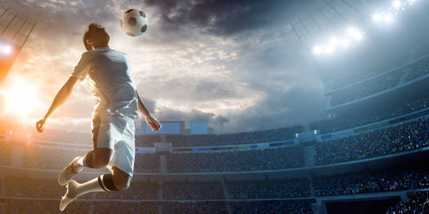

About Football
Football, also called soccer in some countries, is the most popular sport in the world. It is played by two teams of eleven players using a round ball. The goal is to score by getting the ball into the opposing goal using any part of the body except the hands and arms (goalkeeper excluded).
Key Features of Football
- Played on a rectangular grass or artificial turf field
- Requires strategic teamwork and fast-paced coordination
- Matches consist of two 45-minute halves
Benefits of Playing Football
- Improves cardiovascular health
- Boosts muscular strength and flexibility
- Enhances endurance and stamina
- Promotes teamwork and communication skills
- Helps develop discipline and mental focus
History of Football
Football, also known as soccer in some countries, has a long and rich history that dates back thousands of years. Ancient civilizations such as the Greeks, Romans, and Chinese played ball games that resembled modern football in many ways.
The contemporary form of football began to take shape in England during the 19th century. In 1863, the Football Association (FA) was established in London, and it created the first standardized set of rules, laying the foundation for modern football.
Since then, the sport has evolved into a global phenomenon, with the FIFA World Cup becoming the most watched sporting event in the world. Football continues to grow in popularity across every continent, uniting people with its simplicity and excitement.
Why Football is Popular
- Requires minimal equipment
- Can be played almost anywhere
- Encourages teamwork and strategy
- Highly engaging for both players and fans
Basic Rules of Football
- 11 players per team, including one goalkeeper
- Match duration: 90 minutes (two 45-minute halves)
- Objective: Score more goals than the opponent
- Offside rule prevents attacking players from staying too close to the opponent’s goal
- Fouls can result in free kicks, yellow/red cards, or penalties
Famous Football Tournaments
- FIFA World Cup (held every 4 years)
- UEFA Champions League (top European club teams)
- Copa America (South America)
- Euro Cup (European national teams)
- AFC Asian Cup, CONCACAF Gold Cup, and more
Legendary Football Players
- Pelé (Brazil)
- Diego Maradona (Argentina)
- Lionel Messi (Argentina)
- Cristiano Ronaldo (Portugal)
- Zinedine Zidane (France)
Health Benefits of Playing Football
- Improves cardiovascular health
- Enhances balance and coordination
- Strengthens muscles and bones
- Promotes mental focus and discipline